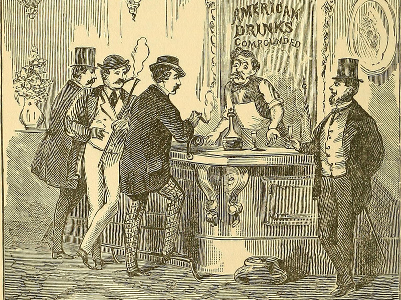
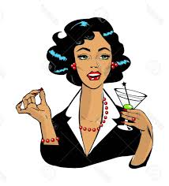
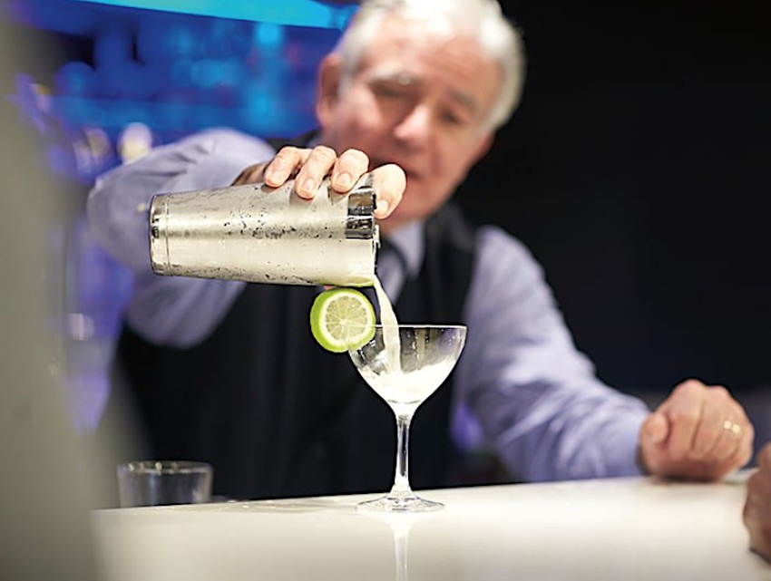

The History of Cocktail
What is your earliest memory of a cocktail? Bloody mary’s on a winter afternoon at the local gymkhana, perhaps? Did you know the bloody mary was created by an American bartender who had to move to Paris because of the Prohibition in the US with vodka made by a Russian fleeing the Bolshevik revolution? Cocktails have a long and colourful history, and many of the drinks we sip on today were created more than 100 years ago. Noted drinks historian and master distiller of Sipsmith gin (an artisanal London gin), Jared Brown, says the cocktail may have originated in the 1200s when the European alchemist Arnaldus de Villa Nova refined the art of distillation and called the liquid obtained through it aqua vitae (water of life).
500-1800
The cock’s tail

Mixed drinks have been around since the 1500s — mulled wine, sack posset and toddy were being consumed then. But, the term ‘cocktail’ was not coined till later. There are many stories about its origins. One talks of a beautiful girl named Coctel who waited upon the king of Mexico and an American general at a peace treaty signing in the 1800s. One credits the word’s invention to Frenchman Antoine AmédéePeychaud, the creator of Peychaud’s Bitters, who would serve a concoction of the bitters and brandy as a remedy for a bad stomach in an eggcup, called a coquetier in French.
The most popular story is about French soldiers helping Americans fight for independence in the 1770s. A barmaid named Betsy Flanagan served them drinks decorated with brightly-coloured feathers from a rooster — from a cock’s tail.
One of the first recorded appearances of the word cocktail in print was in a New York newspaper called the Balance & Columbian Repository, on May 13, 1806. A cocktail was described as “a stimulating liquor, composed of spirits of any kind, sugar, water and bitters — it is vulgarly called a bittered sling.” Drink historians and authors Jared Brown and Anistatia Miller found the word in a 1798 edition of a London newspaper called the Morning Post & Gazetteer. It appears in reference to a politician’s debt at a pub near Downing Street.
1800-1900
America’s golden age
In the early 1800s, sazerac (rye whiskey or cognac with absinthe and bitters) and brandy crusta (cognac, Grand Marnier and Maraschino) were created in New Orleans. In the 1850s, the whiskey sour appeared. Then, the first bottles of vermouth landed on American shores and a cocktail of rye whiskey and vermouth called the Manhattan appeared. Bartender and author of The Joy of Mixology, Gary Regan says the Manhattan was the very first cocktail to use vermouth. “From it were born the martinez and the martini.”
The 1800s were a golden era for cocktails in the USA. Bartending was among the highest-paying professions. Thomas was one of the most influential people in San Francisco and, reportedly, earned more than the vice president. Bear in mind that bartenders then did not have access to readymade syrups or purees; everything was prepared from scratch. The drinks they created are still drunk today.
1900-1933
1900-1933
The cocktail industry lost momentum when the Temperance Movement swept the United States in the early 1900s. It led to prohibition in the USA, which outlawed the sale, consumption, production and transportation of alcohol in the US, and lasted from1920 to 1933. Bootlegged alcohol became popular, and many distillers left the big cities to distil in forests or in Canada and then smuggle the alcohol back into the US. This gave rise to a phenomenon called rum running, which referred to the bootleggers trying to evade the excise officers. Many of America’s first NASCAR racers were rum runners during the prohibition.
America’s famous bars were replaced by illegal ones, called speakeasies. While some bartenders found other careers, some migrated to Europe and took jobs in bars in big cities such as London and Paris. Very soon, American drinkers who couldn’t do without their old fashioneds and martinis sought out these bars. Thus, London and Paris got their first ‘American bars’. Bars at glitzy hotels, such as the Savoy, in London, or the Ritz, in Paris, became a mecca of cocktails.
The Cosmpolitan

In 1979, a Swedish vodka brand called Absolut entered the US. Seven years later, it launched the world’s first flavoured vodka, Peppar, flavoured with pepper, and followed it with one flavoured with lemon (Citron). In 1990, famous New York bartender Toby Cechinni fixed a drink at his bar (Odeon) consisting of Absolut Citron, Cointreau, cranberry juice and lemon juice. Mixologist Dale Degroff, also known as King cocktail, made the same drink for pop diva Madonna at his bar in New York and added a flambéed orange peel to it. Thus was born the Cosmopolitan.